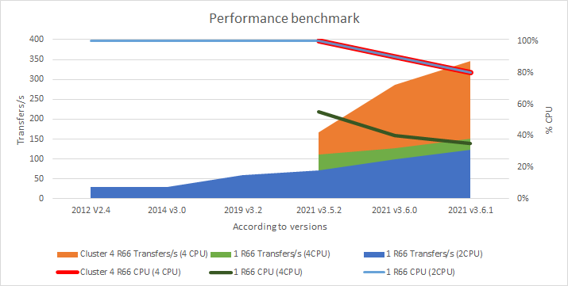
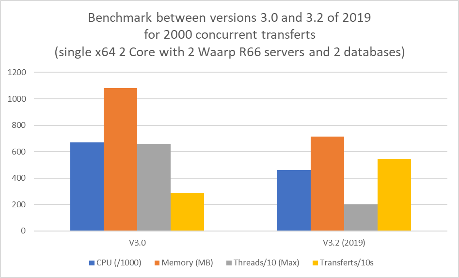

Waarp R66
Waarp R66 : software for massive file transfer with monitoring : Waarp Route66
This web site contains most of the useful informations to setup and use Waarp R66:
Here is the equivalent PDF-One document (potentially not up-to-date)
- Presentation gives an overview of Waarp R66
Installation points to installation procedure (still manual operation right now, but automatic process to come)
- Technical points to some technical "under the wood" specifications as the protocol, the filestatus or the REST interface
- Howtos points to various help, options and production related elements as the monitoring or the administration
- R66 Administrator GUI points to a central tool to help to administrate multiple R66 servers (or one) and will be extended through time
- R66 Proxy presents the proxy support for R66 for highly secured environments
-
R66 Client GUI presents the GUI for R66 client
Note that on the github web site, you can also found some wiki that have some useful tips and tricks to help you to get the best of this software.
This software is a file transfer monitor in protected and powerful contexts.

Waarp R66 is Massive a File Transfer Monitor as:
- Efficient and secured
- Adaptative to functional needs
- Integration within IT (SNMP compatible)
- Strong Administration and Production tools
- History of transfers, tracked events
- Independent of Server Platforms
- Totally Open Source
- Usable with different kinds of Database, centralized or distributed
- Integration within Waarp file transfer gateway (translating from HTTP/FTP to R66)
- FTP is available through Waarp Gateway FTP Exec
- FTP Client is enabled through Tasks
-
HTTP could be made available through explicit specifications in order to provide an adaptation since it is more business dependant
- Integration within an application through extra Java Classes, both on client and server side, allowing Application 2 Application model
-
Internationalization supported both on Server, Client and Web administration interfaces
This Software has the following properties:
Full Java, so platform independent (tested under Windows, Linux, AIX)
Allows to manage up to 2^64 simultaneous transfers
Uses a database (JDBC: H2, PostGreSQL (recommended) ;or Oracle indifferently, implementations works also with MySQL and MariaDB but not recommended) to retain configuration and log of transfer but is not required for clients to be functional
Allows the sending and the reception (in Push or Pull mode) between two identified partners
- The transfer is protected (controlled optionally by MD5 or SHA1 or others, with restart of transfer, SSL support)
- Allows the execution of pre operation (before transfer) or of post operation (after transfer) or error operation (after an error occurs)
- Multiplexing of network connections between two servers (firewall compliant)
- Proxy/Reverse Proxy for R66 protocol (for DMZ)
- KeepAlive internal and TimeOut control
- Control on Bandwidth, CPU, simultaneous transfer limitation usage
- Functions of control and statistics, traces for all transfer operations
- Web support for monitoring production
- Web and software have I18N support for internationalization (
 and
and  for the moment)
for the moment)
- Log level is manageable at startup (configured through Logback config file) or from Administration interface during the execution
- HTTPS Web administrator allows to manage accounts with specific rights
- SNMP compatible as Agent both in pull or notification mode with SNMP V2 and V3 compatibility
- S3 support for getting or sending files from R66 Files (as source or target)
- API REST to administrate all events and functionalities
- Compatible with external API REST to receive (push mode from R66 server) all events, to centralize monitoring (usable with a standard HTTP(s) API REST or even an Elasticsearch API REST)
- Usual client submitted transfer through database as asynchronous operation
- Synchronous client which directly manages its transfer, using however the database as control
-
Synchronous thin client which does not used the database at all (useful for instance for light client on personal computer and not server in production) - those clients are not listening to incoming transfer requests but can only initiates transfers (in push or pull)

This project is in production in the French Ministery of Finances to enable file transfers from an FTP protocol (client side) to a Waarp R66 protocol (server side protocol) and to allow file transfers between two instances within the same services with a long distance and with a high secured and controled protocol due to the high level of security and integrity in the corresponding project since end of 2009. See Crawd User page for some other IT using it.
Benchmarks (2021)
New benchmarks were done in 2021 to check the correctness of the solution according to new environement, using mainly Linux and small servers, even more in Cloud environement. The servers used were simple Linux server with 8 to 16 GB of RAM, Sata or SSD DISK and 2 or 4 cores, including both database and the Waarp R66 Server. Two versions were compared: the V3.0, mainly based on 2.4 version with few improvements around performances and bottleneck, the V3.2,the V3.5.2 and the V3.6 with a huge gap of improvements, continuing improvements in 3.6.1.
- Memory consumption decreases of 25% (from 1100MB to 500MB)
- CPU consumption decreases of 25% (from 70% to 30%)
- Thread consumption decreases drastically by a factor of 3 (from 6000 to 2000 Threads)
- Database consumption decreases drastically from more than 100 concurrent connections to a couple of them.
- Last but not least, Transfer capacity increases accordingly of 100% and with even more stability.
-
In V3.0 and previously, it was possible that transfers hang above 1000 concurrent transfers, now even 5000 do not prevent any transfer to continue until the end.On a small server (2 cores 8 GB SATA Disk), the transfer rate was about 125 transfers per second for 2000 simultaneous transfers between 2 local Waarp servers using 2 databases (so twice CPU, RAM, Disk, Network, Database, Thread contentions on the same host).On a standard recommended server (4 cores 16 GB SSD Disk), the transfer rate was about 150 transfers per second for 2000 simultaneous transfers between 2 local Waarp servers using 2 databases (so twice CPU, RAM, Disk, Network, Database, Thread contentions on the same host).According to our tests, projection on a server using 4 cores 8 GB SSD Disk can reach more than 300 transfers per seconds. Moreover using a cluster mode, we were able to reach about 350 transfer/s on the very same hardware (4 core 16 GB SSD Disk server), hosting 2 R66 servers in cluster mode (acting as 1).

Benchmarks (2019)
New benchmarks were done in 2019 to check the correctness of the solution according to new environement, using mainly Linux and small servers, even more in Cloud environement. The servers used were simple Linux server with 8 GB of RAM, Sata DISK and 2 cores, including both database and the Waarp R66 Server. Two versions were compared: the V3.0, mainly based on 2.4 version with few improvements around performances and bottleneck, and the V3.2 with a huge gap of improvements.
- Memory consumption decreases of 25% (from 1100MB to 700MB)
- CPU consumption decreases of 25% (from 70% to 45%)
- Thread consumption decreases drastically by a factor of 3 (from 6000 to 2000 Threads)
- Database consumption decreases drastically from more than 100 concurrent connections to a couple of them.
- Last but not least, Transfer capacity increases accordingly of 30% and with even more stability.
-
In V3.0 and previously, it was possible that transfers hang above 1000 concurrent transfers, now even 5000 do not prevent any transfer to continue until the end.On this small server, the transfer rate was about 54 transfers per second for 2000 simultaneous transfers between 2 local Waarp servers using 2 databases (so twice CPU, RAM, Disk, Network, Database, Thread contentions on the same host).According to our tests, compare to 110 transfers per seconds on 2 servers having each 4 cores, this is a great improvement, since only 2 cores were available and only 1 host for 2 servers and CPU was at 100%. A projection on 2 servers using each 4 cores could lead to more than 150 transfers per seconds.

Benchmarks (2009)
Some pre benchmarks were done on PC and a Power5 server (12 CPU). In every benchmarks, the java used memory was less than 200 Mbytes, the CPU was always less than 4 CPU by JVM (server or client). The tested file has a size of 1.12 Mbytes.
- 100 synchronous clients using one multiplexing network connection: 32 transmissions per second (average) or 286 Mbits (with or without MD5)
- 1000 asynchronous transfers (submitted work) using one multiplexing network connection: 59 transmissions per second (average) or 527 Mbits
-
1000 synchronous clients using 10 multiplexing network connection (100 synchronous clients by network client): 70 transmissions per second (average) or 627 Mbits

More recent benchmarks (2019) show that R66 was able to sustend more than 130 transfers per second in average between 2 x 2-core x86 servers.
-
-